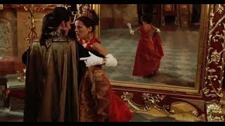
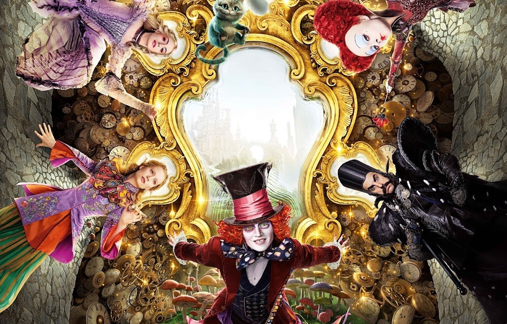
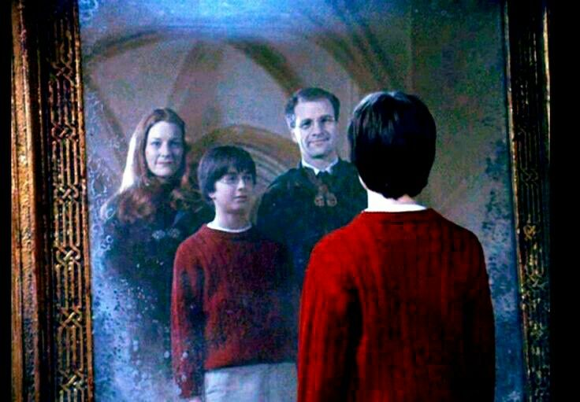

Obras Artísticas
Van Helsing - El cazador de monstruos
Los vampiros no proyectan sombra ni se reflejan en los espejos. Tampoco pueden ser fotografiados y filmados.
Alicia a través del espejo
Idea del espejo como entrada a un mundo alterno a la realidad.
Harry Potter - El espejo de Oesed
Harry Potter viendo a sus padres a través del Espejo de Oesed. Para él, es todo lo que quería.
Los Simpsons

Nelson deseando ser rico algun día.